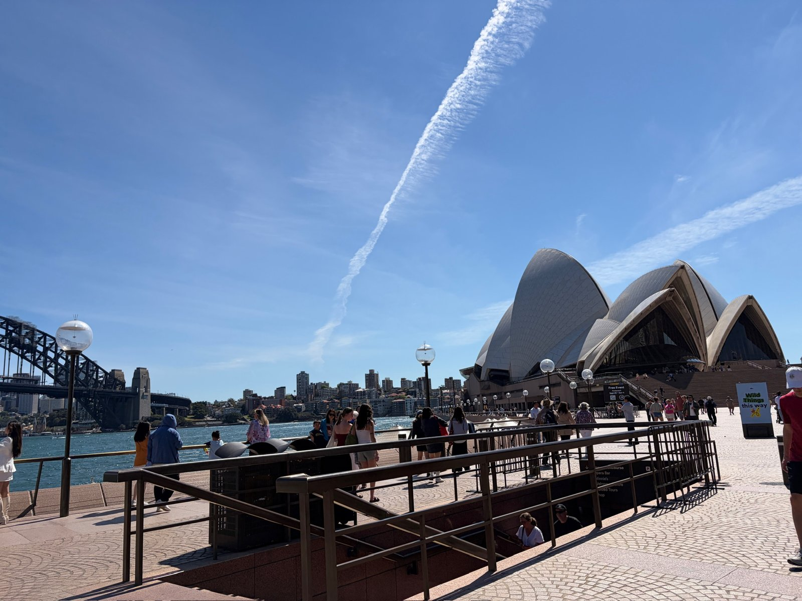

01이번 원본
이동
호주로 출발하는 날
- 인천공항
- 출국장·탑승구
- 기내
오후 공항 도착 사진부터 탑승구와 기내의 가족 장면까지 출발 당일의 흐름이 남아 있습니다. 기내에 있더라도 휴대전화 GPS가 출발 공항에 머물 수 있어 항공 경로로 해석하지 않았습니다.
근거: 이번 원본 · 사진·GPS · 이번 폴더 사진 26장 / 동영상 2개
가족 전용 기록 보기 ↗
사진으로 다시 잇는 우리 여행
시드니 항구에서 골드코스트의 새벽까지
기존 여행기 · 2026. 9. 29. — 10. 8.기억을 이어 주는 사진들
시드니의 항구와 동물원, 대학 캠퍼스와 공연, 골드코스트의 바다와 브리즈번으로 이어진 열흘. 기존 여행기에서 확인한 여정에 이번 원본 폴더의 사진 기록을 나란히 연결했습니다.
장소와 시간을 연결하다
버튼을 누르면 Google 지도에서 해당 장소를 볼 수 있습니다. 전체 동선 링크는 공개 장소를 잇는 Google 추천 경로이며 실제 이동 기록과 다를 수 있습니다.
날짜별로 펼쳐 보는 기억
전체 10개 날짜를 보고 있습니다.
이동
오후 공항 도착 사진부터 탑승구와 기내의 가족 장면까지 출발 당일의 흐름이 남아 있습니다. 기내에 있더라도 휴대전화 GPS가 출발 공항에 머물 수 있어 항공 경로로 해석하지 않았습니다.
근거: 이번 원본 · 사진·GPS · 이번 폴더 사진 26장 / 동영상 2개
가족 전용 기록 보기 ↗도시 산책
원촬영 시각이 남은 동영상은 아침 시드니 도착 이동 구간을 가리키고, 사진은 시내 식사 장면을 담습니다. 달링하버 산책과 숙소 전망·생일 장면은 기존 여행기의 별도 사진 검증 기록으로 보완했습니다.
근거: 이번 원본 + 기존 여행기 · 이번 폴더 사진 6장 / 동영상 1개
사진 6장은 GPS가 없고 시간대 표기도 비정상이라 정확한 현지시각은 표시하지 않습니다.
도시 산책
이번 사진 64장과 동영상 1개는 오전 오페라하우스 주변에 집중됩니다. 서큘러 키 방향에서 베넬롱 포인트 쪽으로 이어지는 짧은 산책 구간이 확인됩니다. 이후 페리와 타롱가 방문은 기존 여행기의 사진 검증 기록에 근거합니다.
근거: 이번 원본 + 기존 여행기 · 이번 폴더 사진 64장 / 동영상 1개
도시 산책
시드니대학교 캠퍼스와 기념품점, 마켓 시티 주변 산책은 기존 호주 여행기의 사진 검증 기록에 남아 있습니다. 이번 폴더에는 이날의 사진이 없어 기존 기록으로 구분했습니다.
근거: 기존 여행기 · 이번 폴더 사진 없음 · 이번 폴더 사진 0장 / 동영상 0개
가족 전용 기록 보기 ↗공연·식사
공연장과 관람 장면, 이후 가족 식사가 기존 여행기의 사진 검증 기록으로 확인됩니다. 이번 폴더만으로 새 세부 동선을 추가하지 않았습니다.
근거: 기존 여행기 · 이번 폴더 사진 없음 · 이번 폴더 사진 0장 / 동영상 0개
가족 전용 기록 보기 ↗이동
브리즈번 공항 도착과 열차 이용, 골드코스트 숙소 전망은 기존 여행기의 기록입니다. 공항과 도시를 연결한 선은 개략 순서이며 실제 항공·철도 경로나 소요시간은 아닙니다.
근거: 기존 여행기 · 이번 폴더 사진 없음 · 이번 폴더 사진 0장 / 동영상 0개
가족 전용 기록 보기 ↗동물·바다
기존 여행기의 사진 검증에는 커럼빈 관람과 캥거루 먹이주기, 해변, 허리케인스 그릴 식사와 밤거리·디저트 장면이 남아 있습니다. 출발 전 10/6 방문 계획과 실제 10/5 기록을 구분합니다.
근거: 기존 여행기 · 이번 폴더 사진 없음 · 이번 폴더 사진 0장 / 동영상 0개
가족 전용 기록 보기 ↗바다·풍경
해변 산책과 바다가 보이는 식당의 가족 식사, 밤 해변 장면은 기존 여행기의 사진 기록입니다. 이번 폴더에는 해당 날짜의 원촬영 시각을 가진 항목이 없습니다.
근거: 기존 여행기 · 이번 폴더 사진 없음 · 이번 폴더 사진 0장 / 동영상 0개
가족 전용 기록 보기 ↗바다·풍경
이번 원본에는 새벽 5시대 골드코스트 바다 풍경 한 장이 남아 있습니다. 이후 브리즈번 차량 이동과 공항 주변 장보기는 기존 여행기의 사진 검증 기록에 근거합니다.
근거: 이번 원본 + 기존 여행기 · 이번 폴더 사진 1장 / 동영상 0개
이동
귀국 전 공항과 기내 사진은 기존 여행기에 기록돼 있습니다. 이번 폴더의 공유 동영상 8개는 내보내기 시각만 남아 있어 이 날짜에 임의로 배정하지 않았습니다.
근거: 기존 여행기 · 이번 폴더 사진 없음 · 이번 폴더 사진 0장 / 동영상 0개
가족 전용 기록 보기 ↗우리가 머문 장소들
전체 6곳
이번 원본의 10월 1일 사진과 위치 기록이 가장 촘촘하게 남은 구간입니다.
이번 사진·GPS 확인10월 7일 새벽 바다 풍경이 이번 원본에서 확인됩니다.
이번 사진·GPS 확인페리와 동물원 장면이 기존 여행기에서 검증됐습니다.
기존 여행기 근거캠퍼스·기념품점 산책을 기존 여행기와 연결합니다.
기존 여행기 근거10월 5일 관람과 먹이주기 기록을 기존 여행기와 연결합니다.
기존 여행기 근거공항 경유와 귀국 전 이동 구간을 기존 여행기와 연결합니다.
기존 여행기 근거선별한 대표 장면만 함께 나눕니다
기존 australia-family-2026 저장소와 사이트는 수정하지 않았습니다. 이 페이지는 자료 출처를 구분한 새 아카이브 요약입니다.
촬영된 장면과 촬영 시각·위치가 함께 맞는 구간을 우선 정리했습니다. 날짜만 있는 사진이나 기존 여행기로 보완한 부분은 별도로 표시했습니다. 사진 없는 시간을 채워 전체 이동을 추정하지 않습니다.
사진은 원촬영 시각과 시간대, 동영상은 원촬영 날짜 정보를 우선했습니다. 공유·내보내기 날짜는 여행 날짜로 사용하지 않았습니다. 기내 GPS는 출발지에 남을 수 있습니다. 가까운 장소는 사진 속 간판·풍경과 함께 확인했고, 교통수단·탑승 완료·정확한 숙소명은 증거가 있을 때만 기록합니다.
사진의 개수는 현재 백업 폴더 기준입니다. 사진 기록일은 전체 여행 기간과 같지 않을 수 있습니다.
공식 안내는 장소 이름과 위치 맥락 확인용이며 가족의 실제 방문은 사진·메타데이터 또는 명시한 기존 여행기 근거로 판단했습니다.